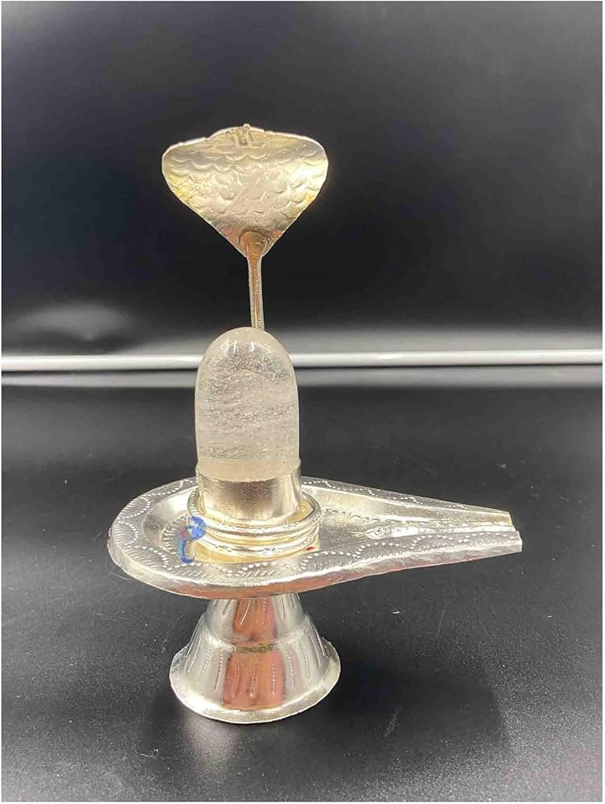

JALA DHARA
Jala Dhara is a sacred ritual in Shiva temples where a continuous stream of water is poured on the deity.
Read More...Pulamonkavu Sreemahadeva Temple, located in Maranadu, Kerala, is a revered Hindu shrine dedicated to Lord Shiva.
The temple's origins trace back several centuries, reflecting the rich spiritual heritage of the region. Architecturally, it showcases traditional Kerala temple design, featuring intricate woodwork and a sloping tiled roof. The temple serves as a focal point for local festivals, especially during the annual Maha Shivaratri celebration, attracting devotees from various parts of the state.
Experience the divine rituals and blessings through our sacred poojas.
A powerful ritual dedicated to Lord Ganesha to remove obstacles and bring success and prosperity.
Daily offerings to the deity ensuring peace, health, and well-being of devotees.
A sacred fire ritual dedicated to Lord Shiva for health, longevity, and protection from misfortunes.
A ritual performed with Vedic chants to invoke Lord Shiva's blessings for inner peace and prosperity.
Jala Dhara is a sacred ritual in Shiva temples where a continuous stream of water is poured on the deity.
Read More...📍 Pulamankavu Sree Mahadeva Temple, Maranadu, Kerala
📞 Phone: +91 98765 43210
📧 Email: info@pulamankavutemple.com